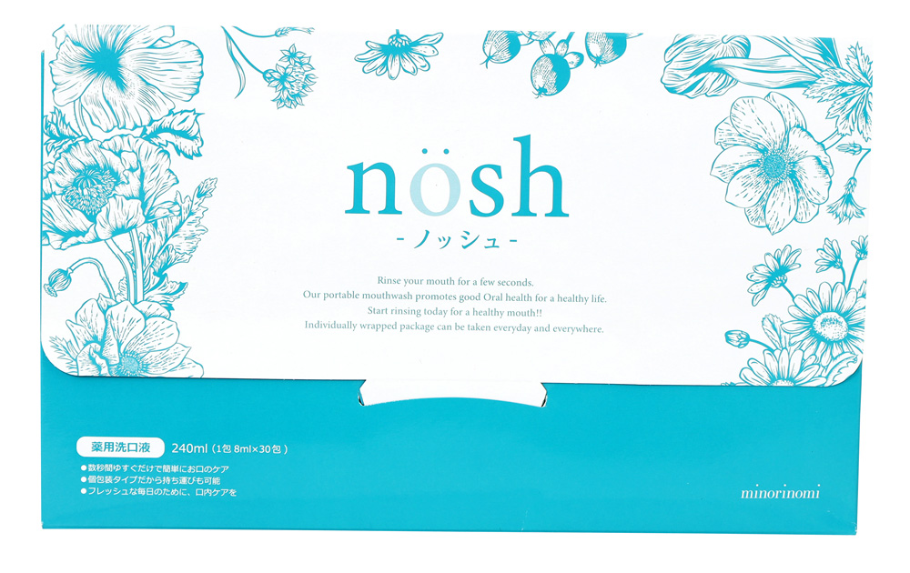

「今日、なんだかマスクがくさい・・・？」
年齢とともに口臭がきつくなるって知ってましたか？
でも、そんな時に、根本から口臭を解決できたのは、口臭対策専用の薬用マウスウォッシュ「ノッシュ」のおかげでした。
「口臭がある」とは思ってもいませんでした
たしかに、マスクのニオイは気になっていましたが、朝も夜も、ランチ後も歯磨きしています。
それに歯間ブラシやマウスウォッシュなどを使って、人一倍ケアには気をつけていたつもりでした。
でも、相手から「ちょっと息におう・・・」と言われた時はショックでした。
ですが、いくら気をつけても臭いがするらしく、原因がわからないので困っていたんです。
ここ数年、自分なりに色々試しました。
ネットで調べたり、歯医者さんに聞いたり、内科、耳鼻咽頭科、歯科、口臭外科とたくさんの病院を周ったり・・・、色んな方法を試しました。
その結果、遠回りはしましたが、原因が分かって口臭はなくなり、自信がつきました。
今では近い距離で話をしたり、寝起きの「おはよう」も気になりません。^^
私が色々やった末に一番効果的だった、口臭対策についてお話しします。
「なぜ、息が臭くなるの？」口臭の原因は
口臭の原因には、
・虫歯や歯垢、歯周病
・ベロの白い部分の汚れ
・歯磨きではおとせない食べかすやタンパク質汚れ
・口内の細菌など
口臭の９割以上は、口の中に原因があるといわれています。
歯磨きでは虫歯は防げない
そもそも、歯のかみ合わせの溝より、歯ブラシの毛先のほうが遥かに大きいため、食べかすを全部落とすことはできません。
それに、口臭の原因となる嫌気性菌（けんきせいきん）と呼ばれる細菌も歯磨きでは殺菌できないため、「口臭の原因は残ったまま」ということです。
食べかすなどのタンパク質汚れが残っていると、数時間後には腐って臭くなります。
そのため、食べかすやタンパク質汚れを食後すぐに、できる限り完全に取り去ることが大切。
でも、自分の口のにおいが気になった時に、「歯を磨く」「ガムやタブレットをかむ」が多くて、他に「うがい」や「水を飲む」「舌を磨く」といった対策しかしていませんでした。
それでは、口臭はなくなりませんよね、、
口内にタンパク質汚れが残っていて、息が臭い状態で、ガムやタブレットをかんでも、変なニオイになるだけです。
根本的な口臭の解決にはなりません。
それに歯ブラシや市販のマウスウォッシュだけじゃ、ニオイの原因菌や汚れは残ってしまいます。
どうやったら口臭がなくなるのか？
まず、口臭のニオイの原因となる「原因菌の殺菌」と「タンパク質汚れの除去」が必要です。
食事をしたあとや歯磨きから時間が経つと、口の中のネバつきも気になりますよね。
その口の中のネバつきが細菌で、これが最も多い口臭の原因。
その細菌が口の中にある食べかすなどのタンパク質汚れを分解した時に発生するガスが、口臭です。
口臭をなくすには、２つの解決が必要
それは、
・口の中のタンパク質汚れをキレイにする
・ニオイの原因菌をきちんと殺菌する
この２つが、口臭の根本的な対策に必要なことです。
私自身が口臭に悩まされてきて、いろいろ試した中で、手っ取り早くて一番効果的だったのが、「医薬部外品の薬用マウスウォッシュ」を使うことです。
もちろん、普通の薬用マウスウォッシュではダメです。
ポイントは、
・タンパク質汚れをきちんと分解、洗浄してくれる
・原因菌をきちんと殺菌してくれる
・効果が長続きする
・必要な常在菌まで殺菌しすぎない（刺激や薬剤が強すぎない、自然派の成分を使っているなど）
健康な細菌まで排除すると逆に口臭の原因になったり、体の不調の原因になったりしますよね。
そして何より、口臭予防ができることが一番大切です。
条件を満たした医薬部外品の薬用マウスウォッシュはどれが一番？
いろいろ試してきた中で、一番良かったのが「ノッシュ」でした。
口の中の汚れをごっそり取ってくれて、きれいに口内洗浄してくれます。
しかも、歯も白くなってラッキーでした♪

他のマウスフォッシュのようにニオイをごまかすのではなく、口臭の原因菌の殺菌と、細菌のエサとなるタンパク質汚れを除去してくれるから、根本から防いでくれます。
いろいろやってきて、「なかなかきれいな息が長続きしないな」と諦めかけていた時に、効果を感じられたものが「ノッシュ」でした。
おすすめの口臭対策専用マウスウォッシュです。
口臭の原因から除去してくれるから、口臭が残らないんです。
たくさんの雑誌やメディアでも掲載されているので、知っているかもしれませんね。
小分けになっているのでカバンに入れて持ち歩けるし、いつでもパッと使えるので面倒くさがりでも簡単です。
今なら初回キャンペーン中
今なら初回限定で約８１％オフでお試しできます。
このキャンペーンを逃すと損ですので、早めにチェックしてみてください。
かなり人気なので、在庫数も少なくなっているようです。
今では近い距離での会話や、人に話しかける時も気にならなくなりました♪
自分が使い始めて、「家族も使い始めるようになった」という人も多いみたいですね。
こちらから申し込むと送料無料でお試しできますので、終了する前に試してみてくださいね。^^